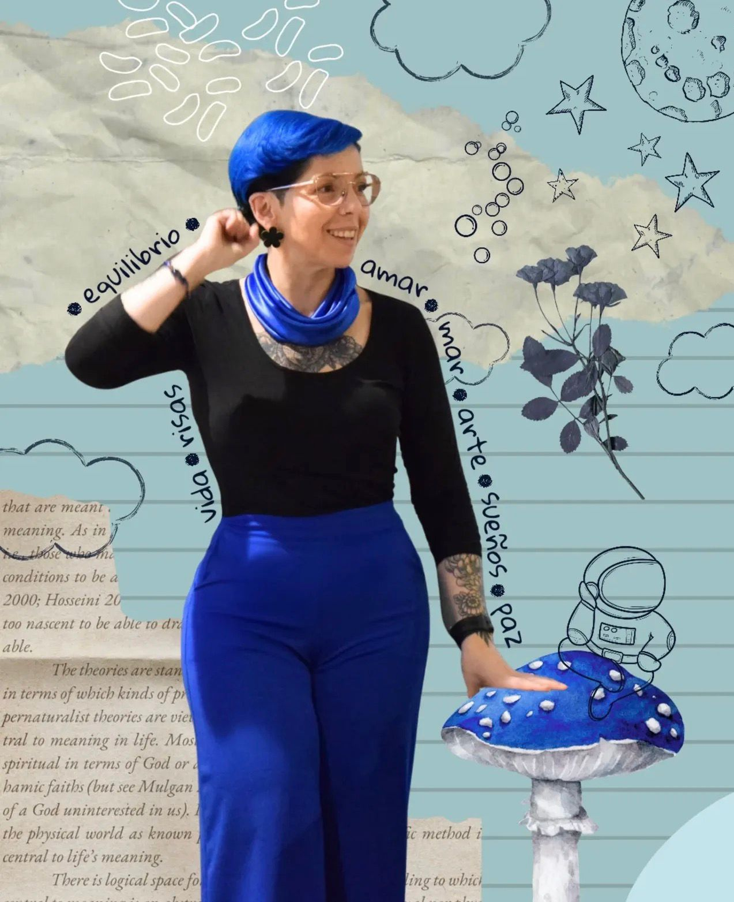

Nathalia Andrea Velasco Duarte
Una mujer con las manos
llenas de luz
Nacida en Bogotá, con herencia campesina boyacense que fundamenta su amor por la tierra, la siembra y el contacto con la naturaleza.
Nathalia Andrea Velasco Duarte
Nacida en Bogotá, con herencia campesina boyacense que fundamenta su amor por la tierra, la siembra y el contacto con la naturaleza.

Soy la integración de más de 16 años diseñando proyectos interdisciplinarios que unen la educación, las artes plásticas y la gestión cultural. Como fundadora de Simoné desde 2013, consolidé una metodología única que usa la creatividad y el contacto con la naturaleza como herramientas de alto impacto para humanizar las organizaciones y fortalecer el tejido emocional de los equipos.
Mi enfoque combina el rigor socio-humanístico con el pensamiento visual y el Land Art. Me especializo en la prevención y gestión del burnout, actuando como mentora para líderes y equipos que buscan transformar el agotamiento en claridad y resiliencia.
Fomentar la expresión genuina y el liderazgo basado en la esencia de cada persona.
Impulsar la innovación y la resolución de problemas a través del pensamiento creativo y la exploración artística.
Conectar con las necesidades y emociones de los clientes, creando un ambiente de colaboración.
Inspirar a superar desafíos y abrazar el cambio con valentía y determinación.
Buscar la mejora continua y ofrecer experiencias de alta calidad que superen las expectativas.
El superpoder de los fuertes. Cuidar al otro es el acto más revolucionario que existe en el mundo contemporáneo.
Agencia pedagógica que diseña experiencias transformadoras de bienestar y desarrollo humano. Programas de power skills, conciencia ambiental y hábitos saludables para empresas de salud, seguros, tecnología y retail.
Acompañamiento a empresas de economía naranja y servicios en el desarrollo de capacidades de prototipado e innovación, con enfoque de diversidad y género.
Gerencia de convenio interadministrativo con la Secretaría de Cultura y la Facultad de Artes, liderando equipos bajo lineamientos de calidad y pertinencia técnica.
Diseño e implementación del programa de arte y expresión plástica de preescolar a undécimo, articulado con la enseñanza por comprensión.
Charla “Creer en crear para educar”, sobre el papel del arte y la creatividad en la educación.
Universidad de la Sabana.
Universidad EAN.
Universidad Nacional de Colombia.
Técnica profesional · CUN.
Universidad de los Andes (2024).
Universidad del Rosario (2021).
Antropología Escénica · MANUSDEA.
Arte con la tierra como herramienta de transformación.
El País dedicó un reportaje a su trabajo con el arte y la naturaleza como herramientas de autoconocimiento y transformación.
“El Land Art desarrolla la creatividad: tienes que resolver con lo que hay, no con lo que compras, sino con lo que encuentras.”
Reportaje sobre cómo convierte el arte y la naturaleza en herramientas de transformación personal.
El Espectador · CromosEl Land Art como herramienta para soltar el control, fluir y crecer personalmente.
El Espectador · El Magazín CulturalLa creatividad como herramienta de gestión emocional en los talleres de Simoné.
BluRadio · EntrevistaConversación sobre burnout y el emprendimiento que lleva el arte a las organizaciones.
Marcas y organizaciones que han confiado en Simoné a lo largo de los años:
Conversemos sobre el camino hacia tu levedad —para ti o para tu organización.
Agenda tu sesión →